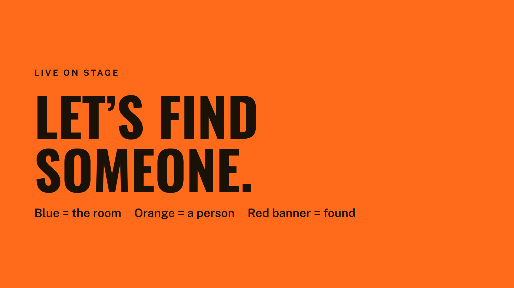

Stage presentation guide
The full script, roles, live-demo runbook, backup plans, Q&A answers and rehearsal plan for a 15-minute talk to 1,000 students.

[Team name] · [College] · [Event and date] — replace the [brackets] everywhere with your real names before you print.
Everything you need for the stage is here. Read sections 1–3 together as a team, then each speaker learns their part from section 4 and their cue card in section 11.
Fifteen minutes, four sections, one live demo. Times are from the moment Speaker 1 starts talking.
| # | Slide | Speaker | Start | End | Length |
|---|---|---|---|---|---|
| 1 | Opening | Speaker 1 | 0:00 | 0:40 | 0:40 |
| 2 | 72 hours | Speaker 1 | 0:40 | 1:30 | 0:50 |
| 3 | Why searching is slow | Speaker 1 | 1:30 | 2:40 | 1:10 |
| 4 | The gap | Speaker 1 | 2:40 | 3:30 | 0:50 |
| 5 | Meet ResQBot Mini | Speaker 2 | 3:30 | 4:20 | 0:50 |
| 6 | One mission, six steps | Speaker 2 | 4:20 | 5:20 | 1:00 |
| 7 | Two boards, one team | Speaker 2 | 5:20 | 6:20 | 1:00 |
| 8 | What it costs | Speaker 2 | 6:20 | 7:00 | 0:40 |
| 9 | 30-pixel thermal camera | Speaker 3 | 7:00 | 7:50 | 0:50 |
| 10 | The ₹5 tube | Speaker 3 | 7:50 | 8:30 | 0:40 |
| 11 | Four clues, one score | Speaker 3 | 8:30 | 9:20 | 0:50 |
| 12 | Finds the silent | Speaker 3 | 9:20 | 10:00 | 0:40 |
| 13 | The rescuer’s view | Speaker 3 | 10:00 | 10:30 | 0:30 |
| 14 | LIVE DEMO | Speaker 4 | 10:30 | 13:00 | 2:30 |
| 15 | Safety by design | Speaker 4 | 13:00 | 13:30 | 0:30 |
| 16 | Where it can help | Speaker 4 | 13:30 | 14:00 | 0:30 |
| 17 | What’s next | Speaker 4 | 14:00 | 14:30 | 0:30 |
| 18 | Send the robot first | Speaker 4 | 14:30 | 15:00 | 0:30 |
| Checkpoint | Target | If you are late |
|---|---|---|
| Speaker 1 hands over (end of slide 4) | 3:30 | Speaker 2 shortens slide 6 to the six step names only. |
| Speaker 2 hands over (end of slide 8) | 7:00 | Speaker 3 says slide 10 in two sentences. |
| Demo starts (slide 14) | 10:30 | Speaker 3 skips the twelve-scenario list on slide 12. |
| Back on slides after the demo | 13:00 | Speaker 4 skips slide 17 (“What’s next”) with one line: “We have a clear roadmap — ask us about it.” |
| Last line, “Send the robot first.” | 15:00 | Never cut the close. |
Opens the talk and owns the ‘why’. During the demo: the survivor behind the cardboard rubble.
Explains the hardware, mission and cost. Switches the robot on at 7:00 and is the robot handler during the demo.
Explains the thermal sweep, score and dashboard. Runs the laptop: switches the projector to the dashboard and back.
Runs the live demo from the phone, then safety, impact, future and the close. Leads Q&A.
A thousand students will forget most of the details. Make sure they remember one sentence and one moment.
| Part | Feeling we want | How |
|---|---|---|
| 1 · Problem | “This matters, and it’s unfair.” | One image (someone alive under concrete), one number (72 h), real disasters, the price gap. |
| 2 · Robot | “That’s clever — and cheap.” | Hold the real robot. Six simple steps. ₹3,589 = one seventh of a thermal camera. |
| 3 · Intelligence | “I understand how it thinks.” | Forehead-thermometer comparison, the paper tube, four clues anyone can follow. |
| 4 · Demo + impact | “I just saw it work.” | The live find, then honesty about limits and a memorable close said by all four. |
Every slide, in order, with the words to say and what to do. This is the same text as the speaker notes in the deck. Yellow marks a name to fill in.
Three hand-offs make or break how professional a team looks. Rehearse them more than anything else.
| When | Outgoing speaker says | Movement |
|---|---|---|
| 3:30 · slide 4 → 5 | “To show you how it works, here’s [Speaker 2].” | Speaker 2 walks in from the right as their name is said. Clicker passes hand to hand. Speaker 1 steps left, then quietly goes to the rubble. |
| 7:00 · slide 8 → 9 | “So how does a three-thousand-rupee robot see body heat? [Speaker 3] will show you.” | Speaker 3 takes the clicker. Speaker 2 goes to the demo table and switches the robot ON (it needs 3 minutes to warm up its motion sensor). |
| 10:30 · slide 13 → 14 | “That’s enough slides. Let’s see it for real. [Speaker 4]?” | Speaker 4 takes the clicker and the phone. Speaker 3 goes to the laptop, ready to switch the projector to the dashboard. |
The demo is the highlight and the biggest risk. Prepare it like a pilot’s checklist.
| When | Who | Do this |
|---|---|---|
| Day before, on the real stage | All | Full tech check: projector, microphones, robot Wi-Fi with the hall full of phones if possible. Do a thermal scan with nobody in front of the robot — stage lights heat the floor and boxes. If the empty scan shows warm patches, move the setup out of the spotlight. |
| T − 60 min | S2 | Charge check: battery above 7.8 V on the dashboard. Upload nothing new on the event day. |
| T − 30 min | S3 | Laptop: plugged in, notifications OFF (Focus/Do not disturb), sleep OFF, screen saver OFF, display set to Duplicate. Open the slides PDF full-screen. Open the backup video, paused. |
| T − 15 min | S2, S1 | Place the robot on its tape mark, rubble on its mark. Sound check: hold the buzzer near a microphone (“Beep / call out”). |
| T − 10 min | S3, S4 | Robot ON. Laptop and phone join Wi-Fi ResQBot-01; on Android tap “Keep connected” when it says no internet. Open 192.168.4.1 in the laptop browser, press F11 (full screen). Check the top pill: “LIVE · car ✓”. Then robot OFF to save battery, and switch the laptop back to the slides. |
| 7:00 on stage | S2 | Robot ON (the motion sensor needs about 30 s; the gas sensor 2–3 min). Mode stays Manual. |
| 10:00 on stage | S1 | Sit behind the rubble, face and arms toward the gap, as still as possible. |
| # | Speaker 4 does | The screen shows | Speaker 4 says (short) |
|---|---|---|---|
| 1 | Clicks to slide 14 | “Let’s find someone.” | “Behind those boxes is a ‘survivor’. The camera can’t see them. Let’s see if the robot can feel them. Switch to the robot, please.” |
| 2 | Nods to Speaker 3 | S3 presses Alt+Tab: live dashboard | “This is the robot’s live screen: video top right, heat radar on the left.” |
| 3 | Taps Auto search on the phone | Radar fills in over about 5 s | “It sweeps left to right, floor and straight ahead. Blue is the stage…” |
| 4 | Points at the screen | Orange cells, a bearing line | “There — orange, to the [left/right]. Body heat.” |
| 5 | Steps aside so the audience sees the robot | State: turning, approaching, confirming | “It turns… creeps forward slowly… stops at 35 cm… and checks for five seconds.” |
| 6 | Waits for the banner | SURVIVOR DETECTED, beacon and buzzer | “Survivor detected! Confidence [read %], [temperature], [moving / not moving]. [Name], you can come out!” Lead the applause. |
| 7 | Taps Acknowledge, then E-STOP | Banner clears; STOPPED | “And if anything goes wrong — one tap. All of this, with no internet at all.” |
| 8 | Nods to Speaker 3 | S3 presses Alt+Tab: slide 15 | Continue with safety. |
Things go wrong on big stages. The audience forgives a problem; they remember how calmly you handled it. Apologise at most once.
| If this happens | Say | Do |
|---|---|---|
| Robot finds nothing in 60 s | “Let’s help it — this is exactly why it has a manual mode.” | Tap Manual, drive toward the survivor with the arrows, then Thermal scan. Point out the orange cells. |
| It alerts on the wrong thing | “It flagged a warm spot — and that’s why the rescuer gets live video to check.” | Acknowledge, aim it at the survivor in Manual, scan again. |
| Pill shows NO CONNECTION | “A thousand phones in one hall is harder for Wi-Fi than any collapsed building!” | Move the laptop and phone closer to the robot (under 3 m); wait 10 s. Still nothing: play the backup video. |
| Pill shows CAR NOT ANSWERING | “The camera is fine; the robot’s brain has lost its cable. Let me show you a recorded run.” | Play the backup video. After the talk, check the D0/D1 wires and the Uno power. |
| Robot doesn’t switch on | “Even rescue robots need a fresh battery.” | Swap in the spare pack (S2). If it still won’t start: backup video. |
| Projector shows nothing after Alt+Tab | (Keep talking about what the robot is doing.) | S3 presses Win+P → Duplicate. Speaker 4 narrates from the phone screen meanwhile. |
| Microphone dies | Speak louder and slower, step to the front edge. | Take a teammate’s microphone; never stop to fix it on stage. |
| You forget your lines | Look at the slide, say its title in your own words, continue. | Teammates never whisper corrections on stage. |
Speaker 4 hosts: repeats each question into the microphone (so the whole hall hears it), then passes it to the owner. Answers are 20–40 seconds. Text in [brackets] needs your real test results.
S1 How is this different from other student rescue robots?
Three things: the four-clue confidence score that still finds unconscious people and rejects heaters and reflections; the robot parks beside the survivor as a light-and-sound marker; and it needs no internet or app, because the dashboard lives inside the robot.
S1 Who would actually use it?
The people who arrive first and have the least equipment: local fire stations, civil-defence and NCC/NSS volunteers, NGOs, and training teams. It is a first-look scout that tells them where to dig first, not a replacement for NDRF.
S2 Why two boards — why not just the ESP32-CAM?
The camera uses almost every pin of the ESP32-CAM, and its pins are 3.3 V. The Uno has 5 V pins for all the sensors, and splitting the jobs keeps motor and sensor control steady while the ESP32-CAM handles Wi-Fi and video. Both are boards most labs already own.
S2 How long does the battery last?
It runs on a 7.4 V, 2500 mAh pack. Our design target is at least 45 minutes of continuous searching (test T12). [Say your measured time here.] It stops itself at 6.8 V to protect the cells.
S2 Could you mass-produce it? What would it cost at scale?
Every part is a standard module, so a kit version would cost less than our ₹3,589 retail bill. The design is open, so any lab can build it today.
S2 What was the hardest problem you solved?
Reliable control over Wi-Fi. In testing, the buttons sometimes stopped working while the video kept playing. We found three causes: the page fell into demo mode after two missed replies, the camera board ran out of network sockets, and garbled serial commands. We fixed all three and added a checksum to every command.
S3 Why not use a real thermal camera sensor?
An 8×8 or 32×24 thermal array costs several times more than the whole sensor budget. Sweeping one ₹759 sensor gives 30 pixels — enough to detect a person and point to them. The array is our first upgrade.
S3 What is the detection range?
Our geometric model estimates about 1.5 m for a person lying down with the 25° tube, and about 0.4 m without it. [If you have measured it in test T2, give the measured number instead.] Beyond that, the robot drives closer and sweeps again.
S3 What if the room is already near body temperature?
The robot compares against the median of the whole sweep, so a warm room raises the baseline, but the contrast gets smaller. Then the live video and motion clue matter more. A thermal array sensor would help most here.
S3 Would it raise an alarm for a dog or a cat?
Possibly, because an animal is warm and body-sized. That is why the alert comes with live video: the rescuer looks before acting. Treat an alert as ‘check here first’, not as proof.
S3 How does it know the direction and distance?
Direction comes from the angles of the warm cells, weighted by how warm they are. Distance comes from the ultrasonic sensor as it creeps forward and stops at 35 cm.
S3 What have you actually tested?
Both programs compile and run on the boards; the detection logic passes all 12 simulated scenarios; the dashboard was tested on phone and laptop; [add the results of the tests T1–T13 you have run].
S4 Does it work in smoke?
Infrared sees through darkness, dust and light smoke far better than a normal camera. Dense smoke and flames reduce accuracy, and the MQ-2 sensor warns rescuers about smoke and gas. It must not be used in explosive atmospheres.
S4 What happens if it loses Wi-Fi?
It stops by itself within 0.8 seconds if commands stop arriving. In auto mode it keeps searching and the alert waits on screen when the phone reconnects. Range is about 20–50 m; a LoRa relay is on our roadmap.
S4 Can it climb real rubble?
Not yet. It handles small obstacles and flat voids. Tracks and higher clearance are the next chassis step.
S4 Is the live video private?
Yes. Everything stays on the robot’s own Wi-Fi between the robot and the rescuer’s phone. Nothing is sent to the internet.
| When | Session | Goal |
|---|---|---|
| Day −7 | Table read (60 min) | All four read the script aloud with a timer. Cut or reword anything that runs long or sounds unnatural in your voice. |
| Day −5 | Own part (each alone) | Learn your first and last sentences by heart and the order of your ideas. Record yourself on a phone once and watch it. |
| Day −4 | Hand-offs + demo (90 min) | Run all three hand-offs ten times. Run the demo at least five times on the measured distance; record the best run as the backup video. |
| Day −3 | Failure drill (45 min) | Someone secretly causes a failure (unplug Wi-Fi, drain the battery, hide the slide). Practise the Plan-B lines from section 7. |
| Day −2 | Full dress run + Q&A | In front of 5–10 friends, in your stage clothes, standing up, with a timer. Then 10 minutes of their toughest questions. |
| Day −1 | On the real stage | Tech check (section 6), a full run with the projector, and a thermal scan under the stage lights. |
| Event day | Warm-up (10 min) | First lines only, and one hand-off. No new changes to code, slides or script. |
Print this page and the next, cut along the card borders, and keep your card in your pocket. The keywords are your safety net, not a script.
Opens the talk and owns the ‘why’. During the demo: the survivor behind the cardboard rubble.
Hand-off line: “To show you how it works, here’s [Speaker 2].”
Explains the hardware, mission and cost. Switches the robot on at 7:00 and is the robot handler during the demo.
Hand-off line: “So how does a three-thousand-rupee robot see body heat? [Speaker 3] will show you.”
Explains the thermal sweep, score and dashboard. Runs the laptop: switches the projector to the dashboard and back.
Hand-off line: “That’s enough slides. Let’s see it for real. [Speaker 4]?”
Runs the live demo from the phone, then safety, impact, future and the close. Leads Q&A.
Hand-off line: “Thank you. We’re happy to take your questions.”